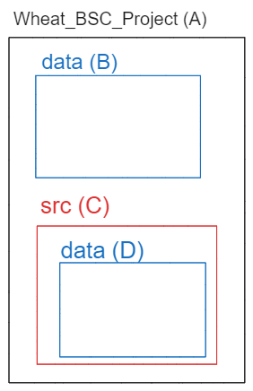

library(dplyr)
# working directory, abbreviated as "."
getwd()
# parent directory, abbreviated as ".."
dirname(getwd())
# assign current path to variable
current_path <- getwd()
# check the type
current_path %>% str()
# check files in the directory
# are they different?
"." %>% list.files(path=.)
getwd() %>% list.files(path=.)
# are they different?
".." %>% list.files(path=.)
getwd() %>% dirname() %>% list.files(path=.)Week2: Working directory and accessor
vector
working directory
Welcome to the second course! You will learn working directory, subset elements from vector, list and dataframe.
Note
- What is working directory (wd)?
- How to access elements from
vector,listanddataframe
1 Working directory
1.1 preparation
- Open the folder that contain
Wheat_BSC_project.Rproj - download the data from HU-box, save it in
data. - create Week2.R and save it in folder
src.

What is working directory (wd)?
1.2 abbreviation path: “.” for wd and “..” for parent of wd
"." means the working directory (wd) where this R script exists.
".." means the parent (one level higher) directory of ".".

Although the meaning of . is the same as getwd(), the content is depending on the environment you are working with.
Right click R studio logo, open a new R studio window, compare the result of getwd() in R project and R
1.3 accessing files and folder inside a R project
Which one do you prefer? Why do we prefer relative path?
# absolute path, did you get error?
"C:/Users/marse/seadrive_root/Tien-Che/My Libraries/PhD_Tien/Project/Postdoc_teaching/BSC_project_IPFS2023/data" %>% list.files(path=.)
# relative path in R base
parent_path <- getwd()
paste0(parent_path,"/data") %>% list.files(path=.)
# Does this works?
".\data" %>% list.files(path=.)
"data" %>% list.files(path=.)read from relative path, which one is correct? Assume working directory current_path is "C/users/Wheat_BSC_project/src"
Absolute_path = current_path +"/"+relative_path Below are four relative paths. Please rewrite them in absolute (full) path form. What should . be replace? Which two are the same? Based on the figure illustated below, path 1-4 should be A,B,C or D?
"ear_summarized.csv""data/ear_summarized.csv""./data/ear_summarized.csv""../data/ear_summarized.csv"

2 get element from a vetor with accessors []
vector indexing start from 1 to the length of the vector. 
empty_vec <- c()
length(empty_vec)
# what is the type of the empty vec?
empty_vec %>% str()
# NULL: empty
empty_vec[1]
empty_vec[0]
vec <- c(1,3,5)
vec[1]
#reorder the vector
vec[c(2,1,3)]
# removing the indexed elements
vec[-1]
vec[-2]
# indexing start from 1, not 0
# therefore you get, numeric(0)
vec[0]
# when access exceeding the range of a vector, what datatype do you get?
vec[4]
vec %>% .[length(.)+1]
vec[1:4]
vec[4:1]
# find specific element or position
vec[c(F,T,F)]
vec[vec==5]
# when codition not match at all, it will return?
vec[vec==2]
vec[c(F,F,F)]
vec %>% .[c(F)]
vec[vec=="a"]
# default str vector
letters
LETTERS
# when the query does not match, guess what will be the datatype?
letters %>% .[.==2]
letters %>% .[c(F)]
# vector over write
vec
vec <- c(2,1,3)
vecvec <- c(1, 2, 3, 4, 5)
logical_vec <- c(TRUE, FALSE)
subset_vec <- vec[logical_vec]
subset_vec[1] 1 3 5what did you observe? Is there any vector recycling?
What happen when you enter vec[TRUE]?
Supplementary information of special datatypes:
Empty : NULL
Indexing at zero position:numeric(0)
2.1 list: keep the diversity of data type
list_object<- list(element_name=value) Make a list is like put a cookie(content of list element) in the cookie jar(list element).
There are 3 common accessors for list: 1. access the list element (cookie jar)
[] access the list position
- acess the content of list element (
cookie)
[[]] access the content of a list element by position or name
$ access the content of a list element by name
list_object$element_name or list_object[[element_name]]


# create a simple list
list(1)
# create a simple list with name "x" for first element
list(x=1)
list(x=1)["x"]
# extract content
list(x=1)$"x"
list(x=1)[[1]]
list(x=1)[["x"]]
# extract with pipe
list(x=1) %>% .[[1]]
list(x=1) %>% .$"x"
# long list
long_list_example <- list(1,c(1,2),
T,c(T,T),
"str",c("a","b"),
list(1),
mean,data.frame())
# check structure of this list
# list_complex_example %>% str()
# list_complex_example %>% glimpse()
# list_complex_example
# first list
long_list_example[1]
# content of first list
long_list_example[[1]]
# first element of content of first list
long_list_example[[1]][1]can you guess what data type are these?
# non-sense
long_list_example[[1]][2]
long_list_example[1][1]
long_list_example[1][2]
long_list_example[2][2]
# meaningful
long_list_example[[2]][2]2.2 lapply: return as a list
lapply(vector, function) ?lapply
# input is vector
c(1,4) %>%
lapply(.,FUN=function(x){x+3})
# input is list
list(2,4,c(1,4)) %>%
lapply(.,FUN=function(x){x+3})
# input has differnt type
list(2,4,c(1,4),"8") %>%
lapply(.,FUN=function(x){x+3})Why you get error in the last line?
2.3 dataframe is a special type of list
each column has one data type
# create a dataframe
df <- data.frame(time=as.Date("2023-04-16",format="%Y-%m-%d")+seq(1,3,1),\temp=c(20,15,13),\thermal_time=cumsum(c(20,15,13)))
# another way
df <- data.frame(time=as.Date("2023-04-16",format="%Y-%m-%d")+seq(1,3,1))
df$temp=c(20,15,13)
df$thermal_time=cumsum(df$temp)
# third method
library(dplyr)
df <- data.frame(time=as.Date("2023-04-16",format="%Y-%m-%d")+seq(1,3,1)) %>%
mutate(temp=c(20,15,13),
thermal_time=cumsum(temp))
dfIs it possible to create data frame with vectors of different length?
data.frame(time=as.Date("2023-04-16",format="%Y-%m-%d")+seq(1,3,1),
temp=c(20,13))2.4 extract columns from data frame
You can subset dataframe by indexing [row,column]
dataframe[,column] select the whole role for selected columnn
dataframe[row,] select the whole column of selected rows
Select multiple row or column by puting logical or numeric vector in the square bracket.
use df,
Access column
thermal_timeasvectorExtract
tempwhentimeis2023-04-17Extract first row and first column with
[1,]and[,1]
if you want to turn a data frame (df) by 90 degree (“transpose”), which function can you use? Could you find the answer on google or chatGPT?